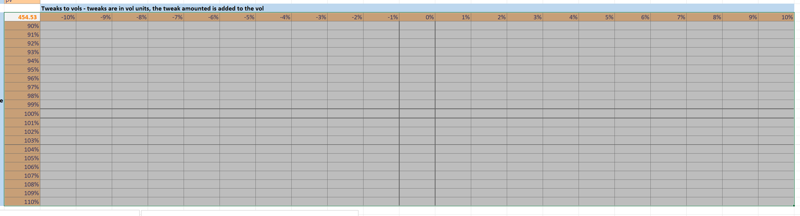

US Equity Index Option Pricing¶
An example spreadsheet “finance\bs_optionpricing.xlsm” in the github xlslim-code-samples repo shows how xlSlim can be used to neatly model a book containing US equity index options.
The spreadsheet shows how option positions are often modelled in practice, with the ability to view the impact of various spot and volatility moves on the book’s risk metrics. The calculations in the spreadsheet are accurate. The only area which has been greatly simplified is volatility - the spreadsheet uses a simple volatility curve with no interpolation between expiries and no ability to store different volatility levels by strike. In practice volatility levels are usually sourced from strike/expiry volatility surfaces that implement advanced interpolation and extrapolation techniques.
We’ll first look at the spreadsheet itself and the functionality it contains, then we’ll go over how the calculations were implemented in Python and how xlSlim ties it all together.
Option Pricing and Scenarios¶
The first part of the sheet registers the Python module “bs_optionpricing.py”. Select cell B3 and press F2 followed by Enter to register the Python module and create new Excel functions.
{kind=link}
If you wished to have the module automatically register when the sheet is opened you could add this VBA code to the spreadsheet:
Private Sub Workbook_Open()
Sheets(1).Range("B3").Dirty
Sheets(1).Range("B3").Calculate
End Sub
The next section is where the base state market data is entered. We will look at options on the S&P 500 and the Russell 2000 indices. The values below are realistic for conditions in October 2022. The volatility inputs are greatly simplified, as discussed previously.

We also enter the current risk free rate and option multipliers. Note the ability to map from the type of option to the model used in the Models section. Although not used here (we are always using Black Scholes) in practice this is where you would map to different valuation models for American options. US equity stocks are typically American.

In the Data Tweaks section we can modify the spot and volatility levels. Spot levels are adjusted by multiplying the spot index level by a percentage and volatility levels are adjusted by adding fixed volatility units to all volatility levels. This is very similar to what is done in practice, although you would usually be able to do more sophisticated adjustments that are not constant across all expiries and strikes.
{kind=link}
Finally, in the Option Portfolio section we enter the option positions we would like to model. We will enter an SPX Long Condor with Put options as discussed in this Investopedia article Condor Spread. We are long an SPX 3650 Dec22 Put, short an SPX 3700 Dec22 Put, short an SPX 3750 Dec22 Put and long an SPX 3800 Dec22 Put.
{kind=link}
Our position risks are shown, note the toggle in cell H20 that controls if details are shown per position. Showing details does take a little longer.
{kind=link}
Further down in the spreadsheet we reach the Portfolio Stress Testing section. The toggle in cell B35 enables or disables the calculations.
{kind=link}
The toggle in cell B36 is used to select which risk metric to display.

Further down the sheet we have plots showing the effect of spot and volatility tweaks on the selected risk metric. We can see that the Condor strategy has low deltas for small spot moves.

If we adjust the asof date in cell B5 to be the option expiry date of 16 Dec 2022,

and select to view pv in the drop down at cell B36
{kind=link}
We can then see the traditional hockey stick plots for the strategy, this is a useful way to check you have correctly specified your positions.

This spreadsheet presents a simplified - but still detailed enough to be realistic - view of how Equity Index option positions are analyzed in practice by portfolio managers. The spreadsheet does not account for option premiums so does not show PL, additionally the sheet does not allow for the simulation of various hedging techniques. Nevertheless I hope the spreadsheet is useful as it does present a more real world view of how options are modelled as compared to the more common presentations which simply show basic Black Scholes pricing and greeks.
Python Code¶
Let’s go through the code in “finance\bs_optionpricing.py”. The full file is avaliable in the github xlslim-code-samples repo.
We start by importing the required functions from various modules in the Python standard library.
# An example of how option portfolios are risk managed
# Requires Python 3.8+ due to the use of NormalDist
import logging
from datetime import datetime, timedelta
from dataclasses import dataclass
from math import nan, log, sqrt, exp
from statistics import NormalDist
from enum import Enum
from typing import List, Dict, Callable
Next we create two module level constants for logging and the normal distribution.
LOG = logging.getLogger(__name__)
# Using the recent NormalDist added in Py3.8
ND = NormalDist(0.0, 1.0)
We define an OptionResults class to store pv and greeks for each option. Note how a dataclass is used to concisely specify the relevant properties. If you have not used dataclasses before I encourage you to read about them, they are very useful and integrate well with xlSlim.
@dataclass(frozen=True, repr=True)
class OptionResults:
"""An option price and analytical greeks."""
pv: float = nan
delta: float = nan
gamma: float = nan
vega: float = nan
theta: float = nan
We define an enum to determine if an option is a call or put:
class OptionType(Enum):
"""Option type enum - CALL or PUT"""
CALL = 0
PUT = 1
And another dataclass to capture each option’s properties:
@dataclass(frozen=True, repr=True)
class VanillaEuropeanOption:
"""A vanilla European option"""
strike: float = nan
expiry: datetime = datetime.utcnow()
underlying: str = None
option_type: OptionType = OptionType.CALL
currency: str = None
The OptionPortfolio class gathers together option positions into a portfolio (often also called a book).
class OptionPortfolio:
"""A portfolio of options"""
def __init__(self, options: List[VanillaEuropeanOption], notionals: List[float]):
# Exclude zero notionals
notionals = [n for n in notionals if n != 0.0]
if len(options) != len(notionals):
raise ValueError(
f"The number of options {len(options)} must equal the number of notionals {len(notionals)}"
)
self._options = options
self._notionals = notionals
@property
def options(self):
return self._options
@property
def notionals(self):
return self._notionals
We define a very simplified VolatilityCurve class to store the volatility levels per expiry. In practice volatility surfaces are used. Volatility surfaces typically store volatility levels in strike and expiry dimensions, with support for sophisticated interpolation and extrapolation in each dimension. Most of the code presented in this document is close to what is used in practice, the simplified VolatilityCurve class is the single biggest simplification I have made to keep the code length manageable.
class VolatilityCurve:
"""A very simplistic volatility curve.
In practice volatilities are stored on a surface with strike and expiry dimensions.
Volatility surfaces also usually support interpolation and extrapolation in the strike and expiry dimensions.
"""
def __init__(self, expiries: List[datetime], volatilties: List[float]):
if len(expiries) != len(volatilties):
raise ValueError("The lengths of the expiries and volatilities must match.")
self._vol_curve = dict(zip(expiries, volatilties))
def __getitem__(self, key: str):
vol = self._vol_curve.get(key)
if vol is None:
msg = f"Failed to find a vol level for {key}"
LOG.error(msg)
raise ValueError(msg)
return vol
The OptionPortfolioCalculator class pulls the classes defined so far together. An OptionPortfolio and all the required market data classes are supplied when creating an OptionPortfolioCalculator object and all the calculations are run.
class OptionPortfolioCalculator:
"""Calculate pv and risk for a portfolio of options."""
def __init__(
self,
models: Dict[str, Callable],
option_portfolio: OptionPortfolio,
asof: datetime,
spot_dict: Dict[str, float],
vol_dict: Dict[str, VolatilityCurve],
cost_of_carry_dict: Dict[str, float],
risk_free_rate_dict: Dict[str, float],
):
self._asof = asof
self._models = models
self._option_portfolio = option_portfolio
self._spot_dict = spot_dict
self._vol_dict = vol_dict
self._cost_of_carry_dict = cost_of_carry_dict
self._risk_free_rate_dict = risk_free_rate_dict
self._option_results = []
self._pv = nan
self._delta = nan
self._gamma = nan
self._vega = nan
self._theta = nan
self._calculate()
def _calculate(self):
asof = self._asof
for n, o in zip(
self._option_portfolio.notionals, self._option_portfolio.options
):
# Loop through the options
try:
# Fetch the inputs
model = self._models[o.__class__.__name__]
spot = self._spot_dict[o.underlying]
cost_of_carry = self._cost_of_carry_dict[o.underlying]
vol_curve = self._vol_dict[o.underlying]
risk_free_rate = self._risk_free_rate_dict[o.currency]
# And call the valuation model for each option
self._option_results.append(
(n, model(o, spot, asof, risk_free_rate, cost_of_carry, vol_curve))
)
except:
LOG.error(f"Failed to calculate {o}", exc_info=True)
# The portfolio risks are the sum of the individual options * their notionals
self._pv = sum((n * o.pv for n, o in self._option_results))
self._delta = sum((n * o.delta for n, o in self._option_results))
self._gamma = sum((n * o.gamma for n, o in self._option_results))
self._vega = sum((n * o.vega for n, o in self._option_results))
self._theta = sum((n * o.theta for n, o in self._option_results))
def __repr__(self):
return f"OptionPortfolioCalculator(pv={self.pv:.2f}, delta={self.delta:.2f}, gamma={self.gamma:.2f}, vega={self.vega:.2f}, theta={self.theta:.2f})"
@property
def pv(self):
return self._pv
@property
def delta(self):
return self._delta
@property
def gamma(self):
return self._gamma
@property
def vega(self):
return self._vega
@property
def theta(self):
return self._theta
Finally the bsm_option_calculator(..) function is where the Black-Scholes-Merton calculations are run. Note how in the highlighted lines we define terms and then reuse them to calculate pv and the various greeks as efficiently as possible. This is how these calculations are typically run in practice, reusing calculation terms and calculating all greeks at once is much more efficient than having a function defined for each option greek.
def bsm_option_calculator(
opt: VanillaEuropeanOption,
spot: float,
asof: datetime,
risk_free_rate: float,
cost_of_carry: float,
volatility_curve: VolatilityCurve,
) -> OptionResults:
"""The Black-Scholes-Merton calculation."""
t = (opt.expiry - asof).days / 365
return_instrinsic = False
if t <= 0:
# A simple test for expiry, in practice you would value up until expiry time.
# After expiry the intrinsic value is returned
return_instrinsic = True
volatility = volatility_curve[opt.expiry]
if volatility <= 0:
# Return the intrinsic value if the vol level goes to 0 or below
return_instrinsic = True
if not return_instrinsic:
# Note how calculations are reused and the pv and greeks are calculated
# at once for maximum efficiency
sqrt_t = sqrt(t)
vol_sqrt_t = volatility * sqrt_t
d1 = (
log(spot / opt.strike) + (cost_of_carry + volatility**2.0 / 2.0) * t
) / (vol_sqrt_t)
cdf_d1 = ND.cdf(d1)
cdf_neg_d1 = ND.cdf(-d1)
pdf_d1 = ND.pdf(d1)
d2 = d1 - vol_sqrt_t
cdf_d2 = ND.cdf(d2)
cdf_neg_d2 = ND.cdf(-d2)
df = exp(-risk_free_rate * t)
net_r = cost_of_carry - risk_free_rate
carry = exp((net_r) * t)
carry_pdf_d1 = carry * pdf_d1
spot_carry_pdf_d1 = spot * carry_pdf_d1
disc_strike = opt.strike * df
if opt.option_type.name == "CALL":
delta = carry * cdf_d1
value = spot * delta - disc_strike * cdf_d2
theta = (
-spot_carry_pdf_d1 * volatility / (2.0 * sqrt_t)
- (net_r) * spot * delta
- risk_free_rate * disc_strike * cdf_d2
)
elif opt.option_type.name == "PUT":
delta = -carry * cdf_neg_d1
value = disc_strike * cdf_neg_d2 - spot * -delta
theta = (
-spot_carry_pdf_d1 * volatility / (2.0 * sqrt_t)
+ (net_r) * spot * -delta
+ risk_free_rate * disc_strike * cdf_neg_d2
)
else:
raise ValueError(f"Unknown option type {opt.option_type}")
gamma = carry_pdf_d1 / (spot * vol_sqrt_t) * spot**2.0 / 100.0
vega = spot_carry_pdf_d1 * sqrt_t / 100.0
theta = theta / 365.0 # One day theta)
delta = delta * spot
return OptionResults(pv=value, delta=delta, gamma=gamma, vega=vega, theta=theta)
else:
return OptionResults(
pv=max(0.0, spot - opt.strike)
if opt.option_type is OptionType.CALL
else max(0.0, opt.strike - spot),
delta=spot if opt.option_type is OptionType.CALL else -spot,
gamma=0,
vega=0,
theta=0,
)
This last little function is used to get a function pointer to the bsm_option_calculator(..) function.
def get_bsm_option_calculator() -> Callable:
"""Get a function pointer to the Black-Scholes-Merton calculator."""
return bsm_option_calculator
Spreadsheet Implementation¶
Several innovative features of xlSlim and Excel itself were used to create this spreadsheet.
Object Caching¶
xlSlim automatically caches Python objects returned by functions, this is described in Passing Python objects. A good example of this is cell K9 where a function pointer is returned by the get_bsm_option_calculator() function and automatically cached by xlSlim.

This cached object is later passed as an input to the OptionPortfolioCalculator() call in cell B33:
{kind=link}
Class Instantiation¶
When xlSlim registers a module an Excel function is created for each class defined within the module. The function signature is taken from the class’s __init__ method. This functionality works particularly well with dataclasses . Each option is represented by a dataclass that neatly encapsulates the key economic properties:
{kind=link}
Another good example is the creation of volatility curves in cells F17 and F18.
{kind=link}
GetAttr¶
Once you have cached objects in a spreadsheet you will often need to access attributes of the cached object, for example the strike of an option or the pv of a portfolio. The utility function GetAttr() is functionally identical to Python’s getattr.
Here we fetch the calculated delta from a cached OptionResults object:
{kind=link}
Passing dictionaries¶
The OptionPortfolioCalculator class is passed several market data dictionaries on instantiation. xlSlim supports cached Python dictionaries as described in Passing Python dictionaries. However in many cases it is simpler to create the required dictionaries directly from Excel ranges.
We have spot levels per index:
{kind=link}
And the OptionPortfolioCalculator() class’s __init__ method expects a spot_dict:
class OptionPortfolioCalculator:
"""Calculate pv and risk for a portfolio of options."""
def __init__(
self,
models: Dict[str, Callable],
option_portfolio: OptionPortfolio,
asof: datetime,
spot_dict: Dict[str, float],
vol_dict: Dict[str, VolatilityCurve],
cost_of_carry_dict: Dict[str, float],
risk_free_rate_dict: Dict[str, float],
):
xlSlim is able to create the input dictionary directly from the Excel range:
{kind=link}
Note
The CreateRange() is used to create the vol_dict input from non-adjacent ranges.
Enums¶
We are using a Python enum to specify whether an option is a call or put:
class OptionType(Enum):
"""Option type enum - CALL or PUT"""
CALL = 0
PUT = 1
xlSlim creates a dictionary of all enums defined in every registered module. This dictionary maps enum names, “CALL” or “PUT” in this case, to the Python enum objects.
When xlSlim creates Excel functions that expect enums, such as the function to create new VanillaEuropeanOptions, xlSlim lets you pass the enum name as an input:
@dataclass(frozen=True, repr=True)
class VanillaEuropeanOption:
"""A vanilla European option"""
strike: float = nan
expiry: datetime = datetime.utcnow()
underlying: str = None
option_type: OptionType = OptionType.CALL
currency: str = None
Here we pass in the string “PUT” and xlSlim internally replaces “PUT” with the enum OptionType.PUT before creating the Python object:
{kind=link}
Viewing Objects¶
While developing the spreadsheet I made extensive use of the ViewPyObject() function to verify objects.
The function can be used on all kinds of cached objects.
View a cached volatility curve:
{kind=link}
View a cached option:
{kind=link}
View a cached portfolio calculator:
{kind=link}
Note
The ViewPyObject() is intended as a development tool to verify objects are created and behaving as expected. Please don’t build dependencies on the output.
DataTables¶
The scenario calculations were created using Excel’s data table functionality.
I started by defining cell B38 to display the selected risk metric:
{kind=link}
Then I defined the list of spot and volatility tweaks:
{kind=link}
Next I selected the grid as shown.
{kind=link}
Then I clicked on the Data Table menu item within the Data>What-If Analysis menu:
{kind=link}
I chose the volatility tweak input in D13 as the row input and the spot tweak input in B13 as the column input.
{kind=link}
This then generated the populated the data table:
{kind=link}